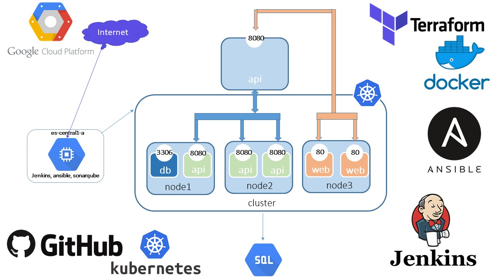

Demo4 "Install the project "eSchool" in cloud platform
System requirements: You must have GCP account and installed Terraform on at your PC
Hello! It is project create of the setup application eSchool for java in a cloud infrastructure .
In this scheme you can see below

Step by step instruction
1. Create dir for your project
2. Select the SSH-utility (for example ssh-keygen) to generate the pair of "ssh keys"
3. Create your credential.json key in GCP
4. Create your privat and public SSH keys
5. Copy your .json key to the root dir and in the dir to the path .ssh
6. Copy you privat and public SSH key to the root dir and in the dir to the path .ssh
7. Go to the variables.tf and change next string :
7.1. string default = "YOUNAME.json" - this is your .json key
7.2. string default = "YOUNAME_project" - this is your project-ID
7.3. string default = "ansible/.ssh/YOUNAME.pub" - htis name you public SSH key
7.4. string default = "ansible/.ssh/YOUNAME.pem" - htis name you privat SSH key
8. You enter command terraform init in the your favorite console
9. In your CLI we enter command: terraform plan
10. In your CLI we enter command: terraform apply